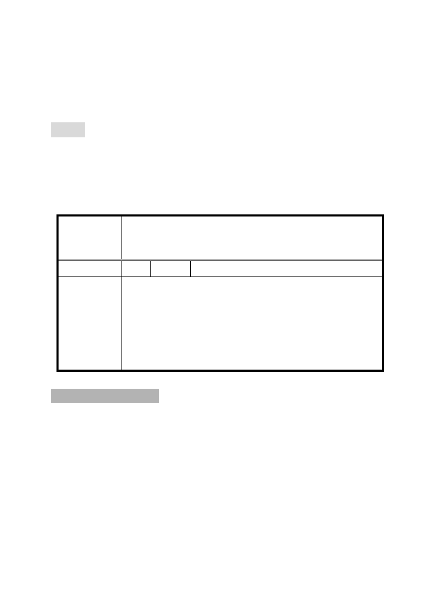

自104年6月12日起公開展覽30天。
六、 申請單位：臺北市政府(財政局)。
七、 法令依據：都市計畫法第27條第1項第4款。
八、 公民或團體陳情意見：1件（詳後附綜理表）。
決議：
一、 本案依市府本次會議所提補充資料及公展計畫書、圖修正通
過。
二、 有關公民或團體所提陳情意見審決如後附綜理表。
臺北市都市計畫委員會公民或團體所提意見綜理表
「變更臺北市中正區公園段三小段 10、11 地號等 2 筆土地
案 名 第四種商業區為公園用地暨修訂文化觀光專用區(市議會舊
址)土地使用分區管制規定細部計畫案」
編 號 1 陳情人 許○乙(104.7.7)
陳 情 理 由 此公園地四面高樓，可能不宜種樹。
建 議 辦 法 此區不需公園
市 府 回 覆 本案公園用地係配合捷運出口留設開放緩衝及休閒空間，未
意 見 來規劃設計時，將妥為考量地區環境特性以利植栽及樹種。
委 員 會 決 議 依市府回應說明辦理。
叁、散會（13：15）。
- 38 -